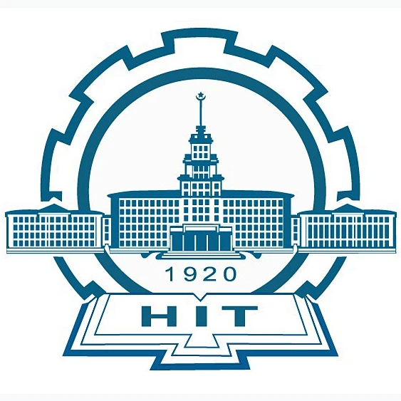
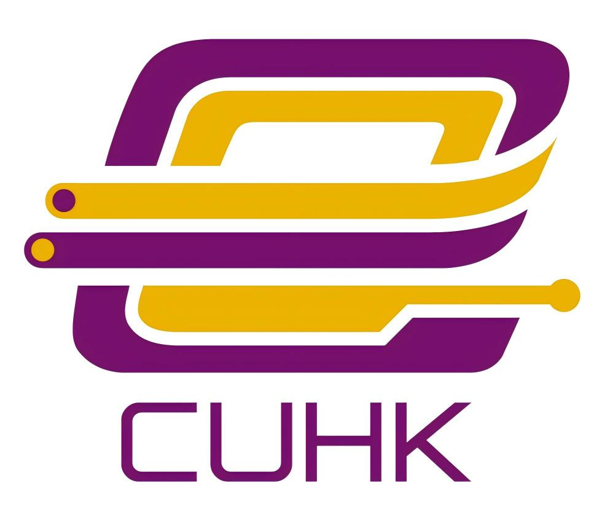
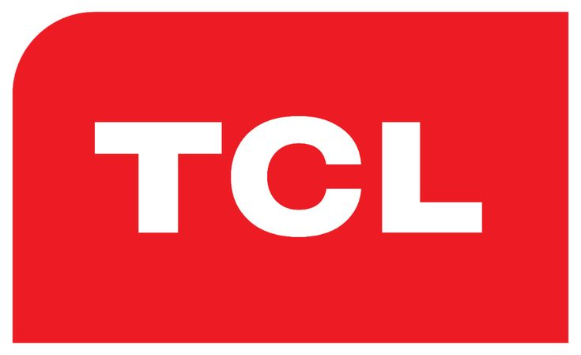
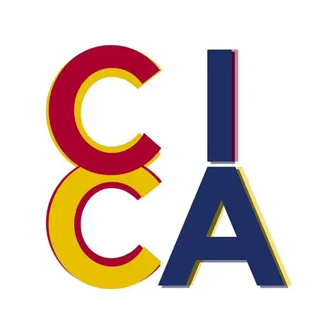

About Me
I am Tianchun Wu, an Electronic Engineering undergraduate at The Chinese University of Hong Kong. My research interests lie in medical robotics, robotic endoscopy, vision-language-action models, and embodied AI.
I am currently seeking PhD positions in robotics, embodied intelligence, and learning-based medical robotic systems. I am particularly interested in building robot foundation models that connect perception, language reasoning, and physical control.
My recent work involves VLM/VLA baseline evaluation, multimodal model fine-tuning, robotic system integration, and endoscope robot experiments on anatomical phantoms.
Education

The Chinese University of Hong Kong
Bachelor of Engineering in Electronic Engineering, ELITE Stream
Selected coursework: Data Structures, C Programming, Digital Circuits, and Electronic System Design
August 2024 – December 2027

Harbin Institute of Technology
HIT–CUHK Joint International Winter School
Coursework: Introduction to Robotics and Introduction to Autonomous Unmanned Rotorcraft Systems
December 2025
Research Experience

Robotics, Perception and Artificial Intelligence Laboratory
Research Student Helper
Supervisor: Mr. Chi Kit Ng
December 2025 – Present
Work on vision-language-action models for robotic endoscopy, with emphasis on baseline evaluation, VLM/VLA fine-tuning, robotic perception, and physical robot validation.
Develop multimodal pipelines connecting endoscopic video, language instructions, robot states, motor commands, and anatomical context for learning-based robotic control.
Use Python, PyTorch, Qwen-based models, GR00T-style action architectures, ROS/ROS 2, STM32, CAN communication, and electromagnetic tracking for robotic system development.
Selected Research Projects
ColonVLA
Vision-Language-Action Model for Robotic Colonoscopy Withdrawal
A research project on learning-based autonomous colonoscopy withdrawal using endoscopic observations, robot states, language-conditioned control, and actuator-space action modeling.
My work focuses on baseline design, VLA action representation, model evaluation, and phantom-based robotic validation.
EndoRinse
Vision-Language-Action Model for Robotic Endoscopic Rinsing
A robotic endoscopy project that studies vision-language-action modeling for autonomous endoscopic rinsing, where visual observations and task instructions are mapped to robot actions for rinsing, cleaning, and scene recovery.
My work focuses on VLA baseline evaluation, task-conditioned action modeling, robotic rinsing policy design, and phantom-based validation under supervised endoscopic workflows.
EndoVLA-OOV
Open-Vocabulary Vision-Language-Action for Robotic Endoscopy
A robotic endoscopy project exploring open-vocabulary perception, visual-language reasoning, and action-conditioned model behavior under endoscopic scenes.
My work focuses on VLM/VLA baseline evaluation, domain-specific data preparation, and model tuning for endoscopic robotic tasks.
Open-H Dataset
Healthcare Robotics Dataset Collaboration with NVIDIA
Contributed high-quality manually collected endoscopic robotic data for the OpenHDS collaboration with NVIDIA, supporting healthcare robotics and surgical robot learning research.
The work connects domain-specific endoscopic data collection with large-scale robotics datasets and robot policy training.
Exploring Continuum Robot Agents for Fire Rescuing in Buildings
Continuum Robotics and Agentic Autonomy
A continuum robotics project for navigation and rescue assistance in structurally constrained building-fire scenarios.
The project received an award at the Hong Kong University Student Innovation and Entrepreneurship Competition.
Professional Experience

TCL Technology Corporation
Project Assistant, Smartphone Research and Development
June 2025 – July 2025
Supported smartphone R&D through prototype testing, technical documentation, defect analysis, and cross-functional engineering coordination.
Worked on functional validation across multiple prototypes and helped improve defect traceability during the flagship-model iteration cycle.
Leadership & Technical Activities

Chung Chi International Association
President
April 2025 – Present
Lead a 15-member executive team and coordinate programme planning, student engagement, external communication, and event operations.
RoboMaster Team, The Chinese University of Hong Kong
Member, Vision & Algorithms Group
December 2025 – Present
Work on real-time robotic perception, object detection, target tracking, and deployment-oriented vision algorithms.
Awards
Award recipient for the continuum robot agent project on constrained-environment rescue robotics.
Technical Skills
AI & Robot Learning: VLM/VLA fine-tuning, baseline evaluation, multimodal learning, robot policy training, Qwen-based models, GR00T-style action models
Computer Vision: YOLO, object detection, visual tracking, endoscopic image understanding, model-assisted annotation
Robotics & Systems: ROS, ROS 2, STM32, CAN communication, motor control, electromagnetic tracking, physical robot integration
Programming: Python, C, C++, Linux, Git, embedded development
Languages: Mandarin, Cantonese, English
Publications
-
Publications and manuscripts will be added after they are publicly available.